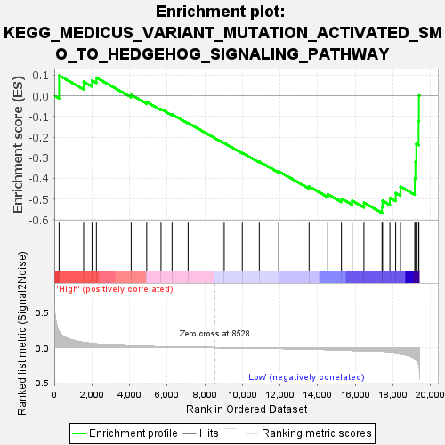
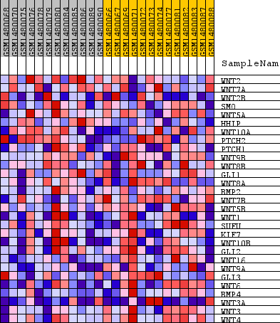
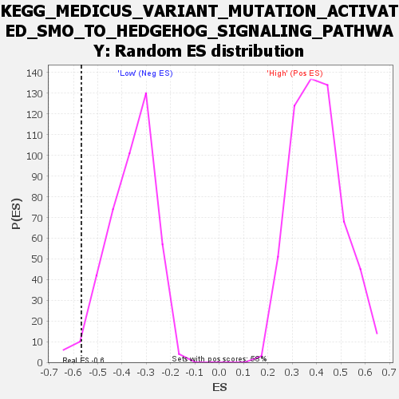

| Dataset | WG6v3.CYGB.cls#High_versus_Low.CYGB.cls#High_versus_Low_repos |
| Phenotype | CYGB.cls#High_versus_Low_repos |
| Upregulated in class | Low |
| GeneSet | KEGG_MEDICUS_VARIANT_MUTATION_ACTIVATED_SMO_TO_HEDGEHOG_SIGNALING_PATHWAY |
| Enrichment Score (ES) | -0.5673973 |
| Normalized Enrichment Score (NES) | -1.5616512 |
| Nominal p-value | 0.025943397 |
| FDR q-value | 0.15889832 |
| FWER p-Value | 0.907 |

| SYMBOL | TITLE | RANK IN GENE LIST | RANK METRIC SCORE | RUNNING ES | CORE ENRICHMENT | |
|---|---|---|---|---|---|---|
| 1 | WNT2 | WNT2 | 255 | 0.225 | 0.0987 | No |
| 2 | WNT7A | WNT7A | 1560 | 0.074 | 0.0680 | No |
| 3 | WNT2B | WNT2B | 2007 | 0.059 | 0.0743 | No |
| 4 | SMO | SMO | 2239 | 0.052 | 0.0882 | No |
| 5 | WNT5A | WNT5A | 4088 | 0.023 | 0.0043 | No |
| 6 | HHIP | HHIP | 4914 | 0.016 | -0.0304 | No |
| 7 | WNT10A | WNT10A | 5674 | 0.011 | -0.0641 | No |
| 8 | PTCH2 | PTCH2 | 6261 | 0.008 | -0.0902 | No |
| 9 | PTCH1 | PTCH1 | 7115 | 0.005 | -0.1318 | No |
| 10 | WNT9B | WNT9B | 8924 | -0.001 | -0.2244 | No |
| 11 | WNT8B | WNT8B | 9034 | -0.002 | -0.2292 | No |
| 12 | GLI1 | GLI1 | 9996 | -0.005 | -0.2764 | No |
| 13 | WNT8A | WNT8A | 10899 | -0.008 | -0.3189 | No |
| 14 | BMP2 | BMP2 | 11930 | -0.012 | -0.3661 | No |
| 15 | WNT7B | WNT7B | 13546 | -0.020 | -0.4394 | No |
| 16 | WNT5B | WNT5B | 14539 | -0.027 | -0.4771 | No |
| 17 | WNT1 | WNT1 | 15266 | -0.033 | -0.4981 | No |
| 18 | SUFU | SUFU | 15835 | -0.038 | -0.5083 | No |
| 19 | KIF7 | KIF7 | 16462 | -0.046 | -0.5178 | No |
| 20 | WNT10B | WNT10B | 17424 | -0.060 | -0.5374 | Yes |
| 21 | GLI2 | GLI2 | 17453 | -0.061 | -0.5085 | Yes |
| 22 | WNT16 | WNT16 | 17842 | -0.069 | -0.4940 | Yes |
| 23 | WNT9A | WNT9A | 18150 | -0.079 | -0.4708 | Yes |
| 24 | GLI3 | GLI3 | 18404 | -0.088 | -0.4400 | Yes |
| 25 | WNT6 | WNT6 | 19164 | -0.158 | -0.4006 | Yes |
| 26 | BMP4 | BMP4 | 19200 | -0.165 | -0.3205 | Yes |
| 27 | WNT3A | WNT3A | 19245 | -0.181 | -0.2329 | Yes |
| 28 | WNT3 | WNT3 | 19368 | -0.233 | -0.1235 | Yes |
| 29 | WNT4 | WNT4 | 19384 | -0.254 | 0.0020 | Yes |

